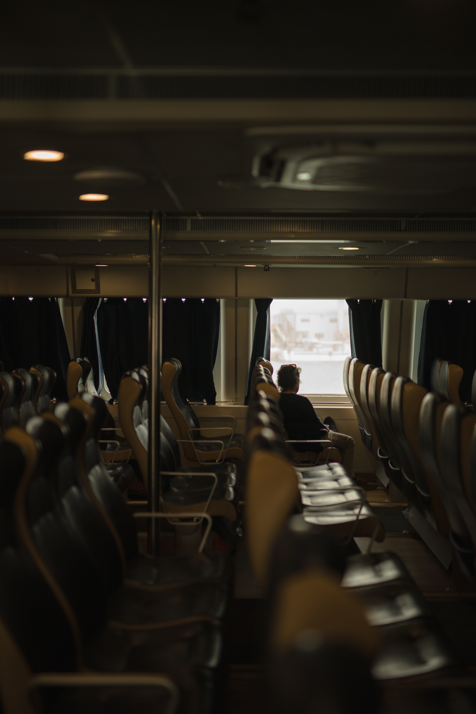
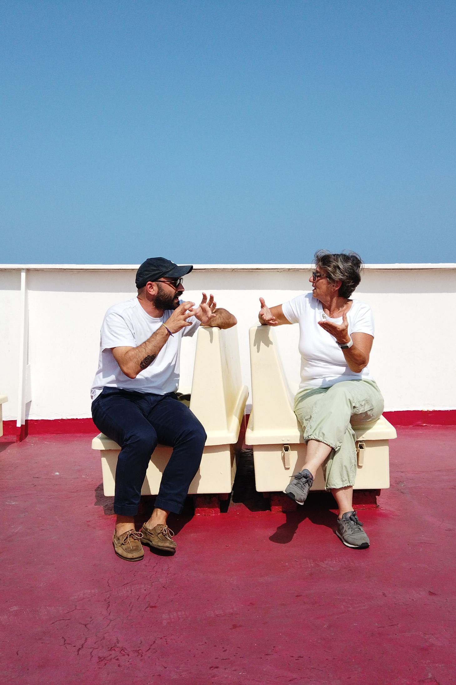
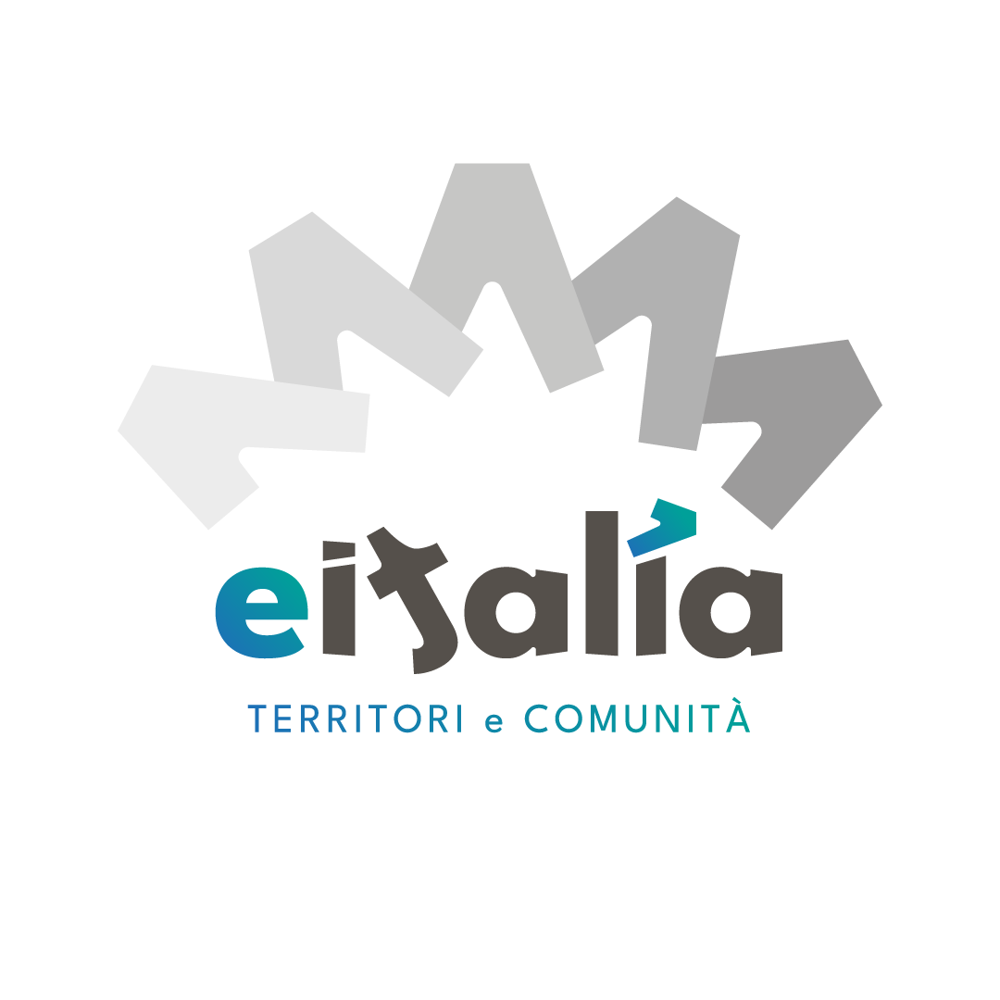
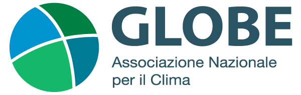
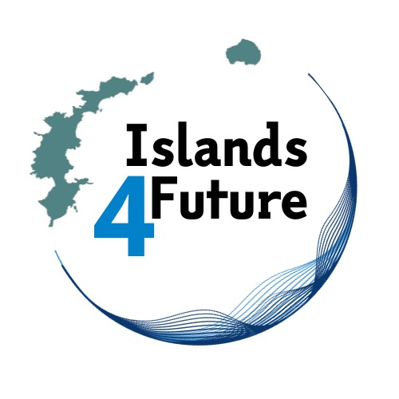
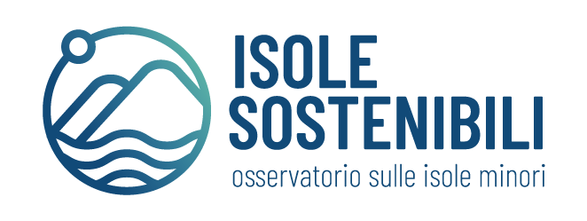
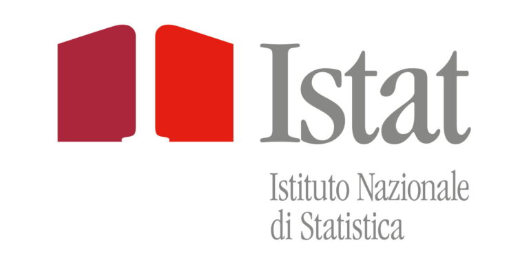
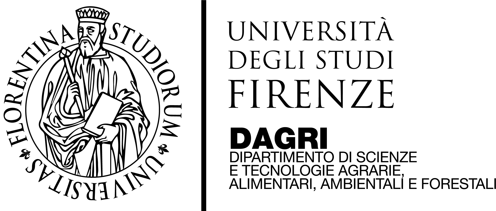

Perché questo
report esiste
Le isole minori italiane sono territori affascinanti ma fragili, sospesi tra paesaggi di rara bellezza e carenze strutturali. Spesso isolate nei servizi essenziali e dipendenti dal turismo stagionale, vivono forti squilibri economici e sociali. L’estate le riempie, l’inverno le svuota. Le attività tradizionali come pesca e agricoltura sono in declino, mentre emergono sfide urgenti nella gestione delle risorse, dalla fornitura idrica alla tutela ambientale.
"Un salto dall'Innovazione Sociale all'Innovazione Trasformativa."
Affrontare queste transizioni richiede la costruzione di ecosistemi multidisciplinari in grado di connettere istituzioni, enti non profit, imprese, centri di ricerca e cittadini in una rete di cooperazione strategica. Le isole minori possono diventare laboratori di innovazione capaci di testare modelli replicabili anche in altri contesti.
Attraverso strumenti di co-progettazione e anticipazione degli scenari, sarà possibile costruire strategie di sviluppo più inclusive, capaci di generare impatti positivi e duraturi nel tempo.


Progettare nelle piccole isole italiane
Fondazione Sanlorenzo lavora sulle isole minori perché le considera spazi di frontiera: territori in cui le grandi questioni del nostro tempo — giustizia territoriale, equità sociale, transizione ecologica — si manifestano in forme radicali e urgenti.
Progettare in questi luoghi non significa portare soluzioni dall'esterno, ma co-costruire visioni insieme alle comunità, ripensare i modelli di sviluppo e generare nuove alleanze tra attori pubblici e privati.
"Lavorare sulle isole minori è un atto politico, culturale e relazionale."
Da questa visione è nato il progetto Sanlorenzo|Futuro, una collaborazione pluriennale con Glocal Impact Network. Una ricerca sistemica per analizzare il funzionamento sociale, istituzionale e produttivo delle isole, individuare le realtà locali più virtuose e trasformare le idee in iniziative concrete capaci di far dialogare comunità locali e istituzioni.
È la scelta di agire nei margini, per restituire centralità a quei luoghi che — proprio perché esposti e vulnerabili — possono diventare motori di innovazione trasformativa.
Un ecosistema di persone, dati scientifici e valori
Questa ricerca esiste grazie all'impegno e ai dati di istituzioni, fondazioni e organizzazioni pubbliche e private che si impegnano per la salvaguardia e il futuro delle piccole isole italiane.







Un progetto aperto, in continua evoluzione
Questa ricerca nasce in open source e questo spazio digitale continuerà a crescere. Un ecosistema orizzontale e collaborativo, che prende vita grazie al contributo di chi vorrà abbracciare la nostra visione di open design per le piccole isole italiane.
Giorgi G., Giusti A., Giorgi L., "Piccole Isole: analisi e ricerca di contesto, funzionamento e prospettive", 1ª Edizione 2025 — Glocal Impact Network & Fondazione Sanlorenzo.
Leggi il report completo
Oltre 130 pagine di analisi, dati e best practice sulle isole minori italiane. Scaricalo gratuitamente.
Scarica il Report